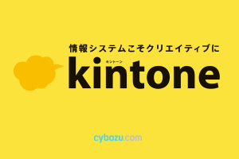
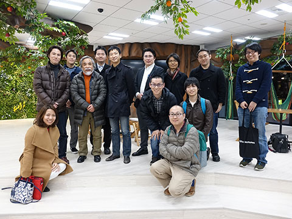
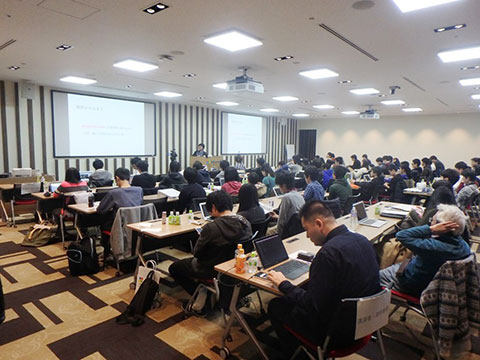
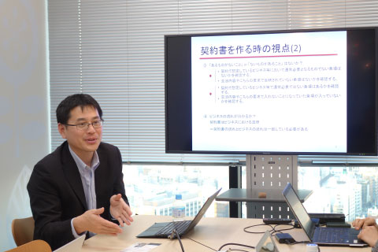
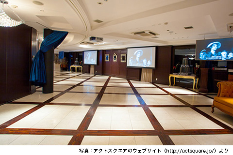

MITOU MAGAZINE
目次 見出しをクリックすると詳細へ移動します
■１ kintoneのアカウント発行の進捗について
 長らくお待たせしていてすみません。3月末までには全員にアカウントの発行が完了する予定です。kintoneでは旧会員サイト( members.mitou.org )に代わり、会員限定の情報を公開していきます。
たとえば、毎週の運営会議・事務局会議の議事録を下記のスペースで公開しています： https://mitou.cybozu.com/k/#/space/13/thread/108
また今後、研究会の活動が活発になった際には、会員限定の情報を蓄積する場所としてご利用頂けます。
■２ メンタリング道場#1開催報告
 1月19日 (火) 、朝倉祐介様（スタンフォード大学 客員研究員 / 前 株式会社ミクシィ 代表取締役社長）を迎え、「メンタリング道場#1」を開催しました。
参加者はすでに起業している、もしくは近い将来に起業を目指している未踏事業のOBである10人。当日は、参加者の自己紹介と各自が行っている事業に関する3分間プレゼンテーション、それを受けてのメンターである朝倉氏による講演、QA、意見交換という構成で進行されました。
大手企業の変革と事業再生を成功させた朝倉氏が実践してきた経営手法やノウハウ、知識と経験に基づくアドバイスに、参加者たちは真剣に聞き入るとともに、熱い議論が交わされ、熱心にメモを取る姿も見られました。
■３ 中高生向け未踏説明会開催報告
 1月24日（日）、「小中高生対象: 未踏の魅力を知ろう」を開催しました。3月9日に控えた2016年度の応募締め切りを前に、小中高生・高専生を対象して未踏の魅力を知ってもらうイベントです。会場となった日本マイクロソフトのオフィスに70人強、ニコ生で累計850人の参加がありました。
IPAよる未踏事業説明の後、未踏OB/OGに未踏に挑戦する意味・醍醐味を語っていただきました。講演いただいた以下の6名の皆様に改めて感謝いたします。杉山浩二様、落合陽一様、岡田侑弥様、竹田聖様、矢倉大夢様、山中勇成様（登壇順）
詳細は、主催の鵜飼さんによるまとめ記事（講演の動画もあり）をご覧ください。
「未踏の魅力を知ろう：小中高生向け未踏説明会」を終えて https://docs.com/yuukai/8966
またkintone上でもその他の情報をまとめています: https://mitou.cybozu.com/k/#/space/15/thread/151
■４ 知財道場#1開催報告
 1月26日（火）、「知財道場#1」を開催しました。講師は、企業法務を得意とする弁護士法人赤レンガ法律事務所の杉山央弁護士です。
参加者の希望に合わせ、知的財産権と契約がメインテーマとなりました。知財や技術を持っている未踏OB/OGがより大きな企業・団体とビジネスを行う場合、不利な契約を結ばないためにどのような契約形態や契約書がありうるのか、その注意点などを説明していただきました。
こうした契約の中から、ライセンス契約を例にとって、監査条項や売上基準でのライセンス料の設定、付加金、遅延損害金といった事項の必要性、また、最終製品の売値がまだ予測できないものへのライセンス供与を検討する場合は、顧問契約・指導契約という方法もありうる等、参加者の質問に対し具体的なアドバイスをしてもらいました。
未踏の人向けのメッセージとして印象に残ったのが「契約書はビジネスの流れに合わせて、相手との関係で作るもの。ネットで検索したひな形では当てはまらないことが多い。特に未踏の人は、新しい物を作る人たちなのだから契約書もオリジナルで作りましょう」というところでした。
講義資料や演習課題などはkintone上で共有しています: https://mitou.cybozu.com/k/#/space/15/thread/153
■５ 未踏会議・未踏ナイトのご案内
 3月10日は、「未踏の日」です。今年も未踏会議に続いて、未踏OB/OGのための「未踏ナイト」を開催します。
＜日時＞
2016年3月10日（木） 19:00開始
＜会場＞
act*square（アクトスクエア）（最寄り駅：恵比寿）東京都渋谷区恵比寿4-19-19 2F
http://actsquare.com/access/index.html
＜会費＞
2000円
＜対象＞
・未踏クリエータ（現役・OB/OG）
・未踏プロジェクトマネージャ（現役・OB/OG）
・IPA・経産省関係者
・「未踏会議」の招待者
・その他未踏社団からの招待者
＜申込＞
【02/24】正式申し込みを開始しました。
http://eventregist.com/e/ipdGKUx5PsoO
必ず上記URLから参加申し込みをお願いします。
FBページへの参加登録だけでは正式な参加申し込みにはなりませんのでご注意ください。
また後日、IPAより多数の方に正式申し込みページが案内される予定です。
枠に限りがございますので、お早めに正式申し込みページから参加登録をお願いいたします。
参加型企画の「1枚スライドショー」の募集も開始しました。
※未踏会議についての経済産業省からのプレスリリースはこちら:
http://www.meti.go.jp/press/2015/02/20160212002/20160212002.html
■６ 第22回未踏成果報告会について
2月20日～21日、第22回の未踏成果報告会が開催されました。SNS上の様子はこちらからご覧になれます。
Facebookグループ https://www.facebook.com/groups/1282403245110364/
Togetter https://togetter.com/li/941553
また、鵜飼さんによる英語でのまとめがこちらにあります：
https://medium.com/@ukkaripon/2015-mitou-final-report-day-1-c0e8053eeb20#.uz1h67sks
https://medium.com/@ukkaripon/2015-mitou-final-report-day-2-6b6d0dd4a16#.4hh9ccdzz
当日はニコ生で中継が行われました。この動画は4月ごろIPAから公開されるとのことですので、公開され次第またメルマガでご案内します。
過去の動画はこちらから見ることができます: https://www.youtube.com/user/ipajp/playlists?view=50&sort=dd&shelf_id=10
■７ 臨時メルマガの公開について
過去のメルマガをWeb上で公開していましたが、臨時メルマガを公開し忘れていました。下記の臨時メルマガをWebサイト上で公開しました。
・2015/07/27 未踏研究会キックオフ開催のご案内【2015年8月4日】（http://www.mitou.org/mitoumagazine/150727.html）
・2016/01/20 【未踏マガジン臨時号】知財道場#1、TechShop Japan、富士通アクセラレータプログラムのご案内（http://www.mitou.org/mitoumagazine/160120.html）